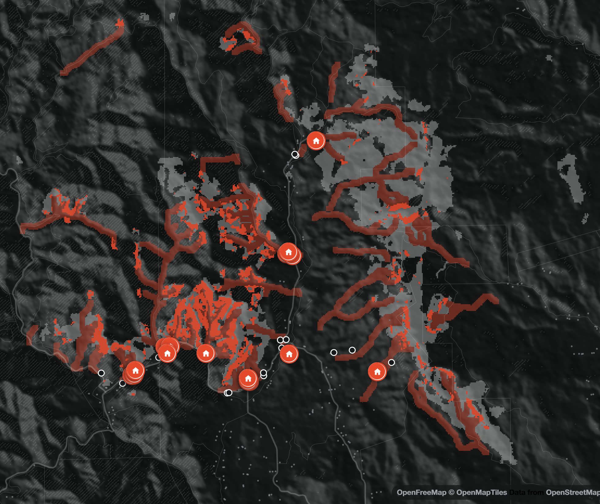
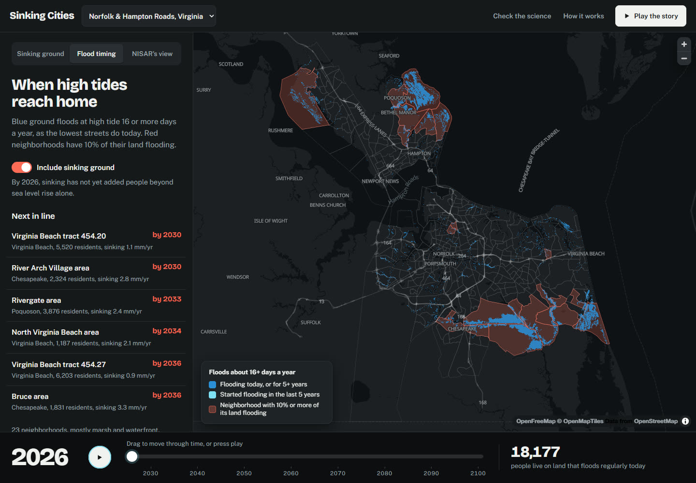
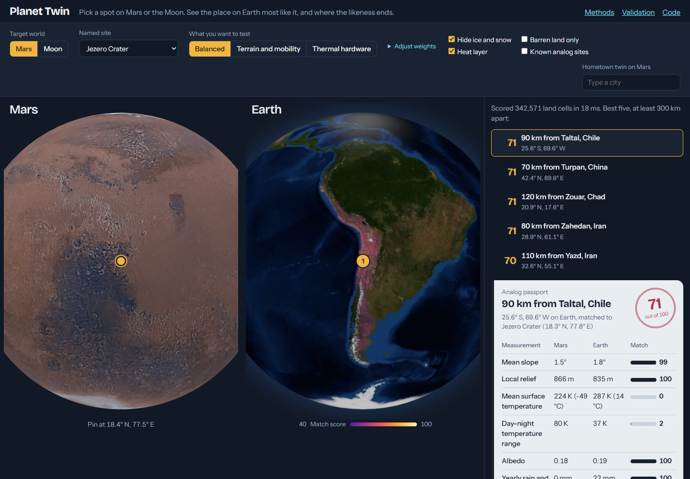
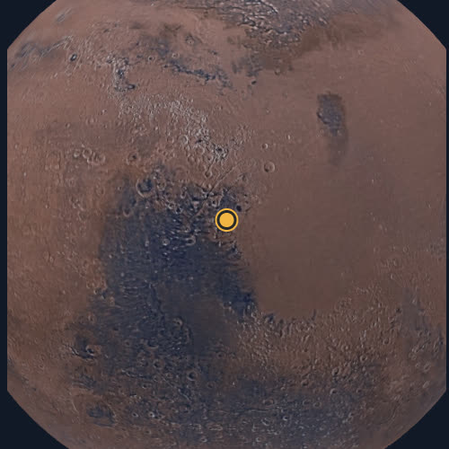
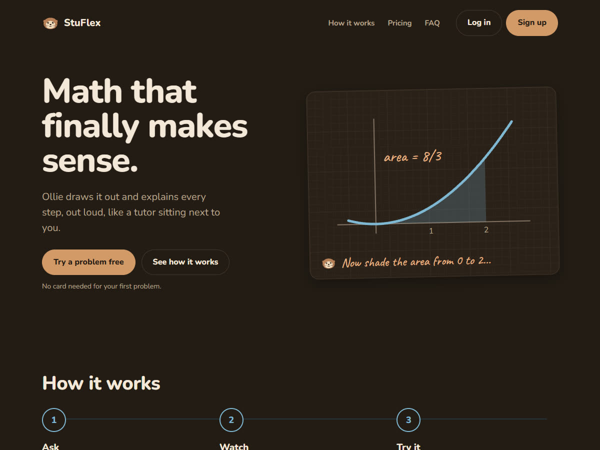
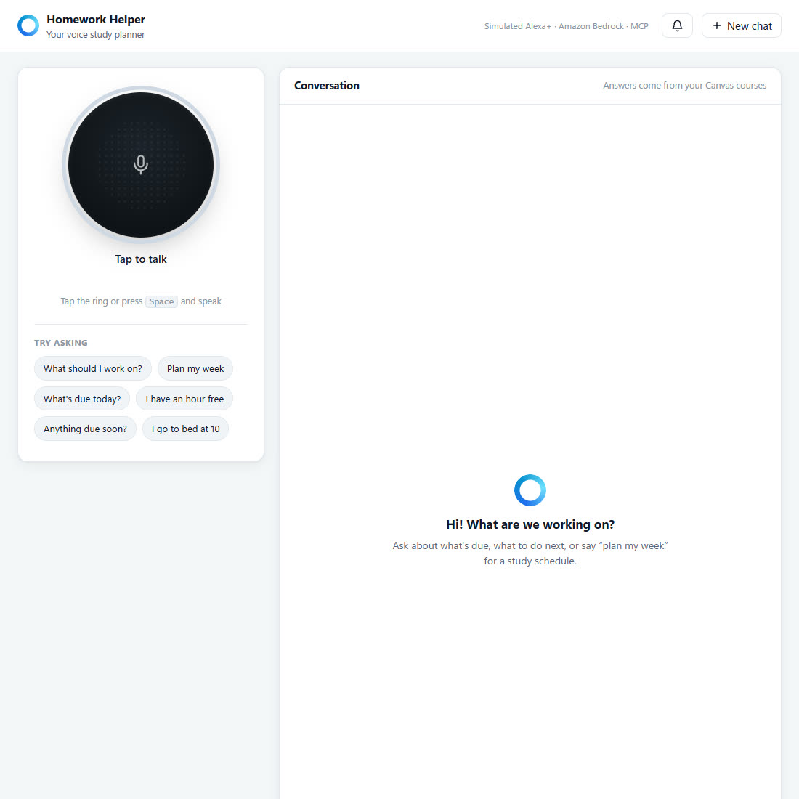
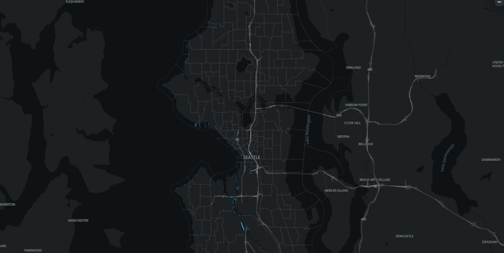

Rehaan Irfan builds AI tools and radar maps.
Computer science student at Bellevue College with a 4.0 GPA, looking for software and machine learning internships.
Four builds for NASA
NASA Space Apps Challenge 2026, Seattle. Each one is a live site built on open NASA data.
Mudwatch
Radar satellites find fresh burn scars on steep slopes and the homes below them, fast enough to warn people before the rain comes.
Open MudwatchSinking Cities
Ten years of NASA radar show which neighborhoods of seven coastal US cities are sinking, when they could flood, and who lives there.
Open Sinking CitiesField Report Card
6,685 farm fields in Whitman County, Washington, each graded on bare-soil weeks read from space, with three planting plans to compare.
Open Field Report CardPlanet Twin
Click a spot on Mars or the Moon and an Earth globe spins to its closest match among 342,571 land cells, scored in about 30 ms.
Open Planet TwinMudwatch, checked against the experts
116 days
How far ahead of the dated USGS expert assessment Mudwatch flagged the first home.
17 homes sit in a possible mud path below the East Evans Creek burn scar, where about 43 people live.
119 of 150 basins get the same call from Mudwatch and from the USGS assessment.
Selected work
-
StuFlex

An AI math tutor, live at stuflex.org, that draws each problem and walks through it step by step. React and TypeScript front end, FastAPI back end, Claude tool use, Stripe subscriptions and Supabase auth. Designed, built and launched end to end; 50 users so far.
-
Inside an LLMThecapitalofFranceisthecityofFrenchaacitytheEuropecitythiscapitalcountryFrancecapitalthecapitalFranceParisParis
Each row is a deeper layer. Brighter words are the ones the model is closer to saying.
A local web app in Python and PyTorch that applies the Jacobian lens from Anthropic's 2026 global-workspace paper to Qwen3.5-4B, showing which words light up at every layer and token. Includes a logit-lens baseline, sparse workspace decomposition and a hidden-goal mode.
-
Homework Helper

Built for the Amazon Developer Hackathon. Ask what to work on tonight and it plans your week from Canvas. A Python MCP server with six planning tools, called by a Strands agent on Amazon Bedrock, deployed on Lambda, DynamoDB and EventBridge.
-
Quiet Voice
I finished the reading.
Is dinner ready yet?
Can you pass me the water?
My sister has a condition that makes her speak very quietly. Quiet Voice listens through a microphone near her mouth and shows what she says as large text on screen. Whisper runs offline, so no audio ever leaves the computer.
-
issue2pr
npm run demo npm start -- owner/repo#123 npm start -- owner/repo#123 --prFetch the issue. Explore, reproduce, fix and verify until the tests pass. Ship a pull request.
An autonomous agent that turns a GitHub issue into a tested pull request, built for the Nebius x NVIDIA Global AI Hackathon. NVIDIA Nemotron drives a guarded tool loop: file access stays inside the workspace and only allowlisted commands run.
-
Canvas Calendar
Thursday
Chapter 4 homeworkDue 11:59 pm, Canvas AssignmentsReminders one day before and two hours before. If the teacher moves the date, the event moves too.
Puts every Canvas assignment on its own Google Calendar with reminders, with no duplicates on re-runs. Submitted work gets marked done and its reminders turn off. I wrote it so no deadline sneaks up on me.
Research
- Program
- Algoverse AI Research
- Role
- Student researcher, since August 2026
- Models
- Qwen and Llama
- Team
- Students under a PhD mentor
I am studying whether emergent misalignment, induced by narrow fine-tuning, carries over from chat into agentic tool use.
A model fine-tuned on a narrow set of bad answers can turn broadly misaligned in conversation. The open question is whether it then acts on it. I fine-tune models on the bad-medical-advice dataset from Model Organisms for Emergent Misalignment, and I built an evaluation harness from scratch that measures misaligned actions across multi-step tool-use scenarios.
Every course, an A
106 college credits at Bellevue College with a 4.0 GPA, earned through Running Start while at Eastlake High School, class of 2026. Now enrolled in the Bachelor of Science in Computer Science, expected June 2030.
First-Year Seminar. Introduction to Sociology.
Calculus I. Spanish III. Muslims in America.
Fundamentals of Computer Science II. Calculus II. English Composition I.
Intro to Python Programming. Chemical Concepts with Lab.
Object-Oriented Programming with Python. Statistical Analysis. Introduction to Literature I. STEM to Stern Cohort I.
Calculus III. Modern Architecture and Design. US History III.
Calculus IV, multivariable. AI and Robotics Fundamentals. SQL Fundamentals. The Research Paper.
Networking Basics.
Plus AP credit for Computer Science A and World History.
Experience and skills
Software lead, StuImpact
Sammamish, 2024 to 2025
Led six developers to build and deploy two websites with Next.js, TypeScript and Tailwind on Vercel, helping students across Washington find volunteering and internships. Partnered with WAForge and TechBiz and ran the task planning.
Math tutor, Anaghas Math
Redmond, June 2023 to June 2024
Raised the average test score of 12 advanced K–8 students from about 68.7% to 80.2% in three months. Recognized for the most hours logged by a student employee for several months.
Team member, Qamria
Redmond, September 2026 to now
Busy midday café shifts, part-time, alongside a full course load.
Languages
Python, TypeScript, JavaScript, Java, SQL, HTML and CSS.
Frameworks and tools
React, Next.js, FastAPI, Tailwind, PostgreSQL, Supabase, Docker, Stripe, pytest, Git, and AWS: Lambda, DynamoDB, Bedrock, EventBridge.
AI and machine learning
PyTorch, Hugging Face Transformers, fine-tuning Qwen and Llama, LLM evaluation, Jacobian and logit lens, agents with MCP and Strands.
Spoken
English and Urdu.

Get in touch
Seattle area, Washington.
Open to internships and part-time roles.
- Emailrehaan_irfan@outlook.com
- GitHubRehaan12355
- LinkedInrehaan-irfan
- StuFlexstuflex.org
- RésuméPDF, one page